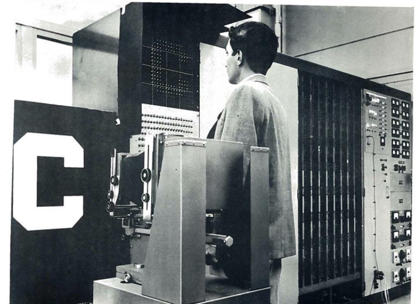

模型算法
正在读取本章记录下次复习：—
请通过“启动学习站.cmd”进入，才能写入数据库。
首先是模型算法，现在的AI都是采用神经网络架构，你可以把它看做是AI的大脑，是决定AI是否”聪明”的基础。
人类的大脑是由很多神经元细胞构成，AI神经网络的本质就是在模拟人类大脑神经元：

AI的神经元与人类神经元一样，接收多个不同的输入x，经过加权求和得到初步结果，再通过激活函数处理生成最终的输出结果。但由于早期的激活函数比较简单，只能做一些简单的二分类任务，比如判断性别、判断真假。
最早的神经网络可以追溯到1958年，Frank Rosenblatt（弗兰克·罗森布拉特）发明了人类历史上第一个神经网络机器：感知机（Perceptrons）。

不过，感知机的神经网络比较简单，只有一个神经元，只能实现简单的二分类判断，例如：根据照片区分 性别。
近20年来，神经网络算法不断迭代、升级、优化。最初的神经网络多采用前馈神经网络，受限于算法，其理解人类语言时的上下文窗口有限，通常只能是5\~10个词。
而到了现在，Transformer神经网络模型得益于优良的算法，可以并行处理大量数据，上下文窗口能达到100K级别，才能更好的理解人类的语言中的段落、语境、逻辑关系。
当然，算法只是其中一个原因。除此之外，不得不提到影响AI智能的另外两大核心：数据和算力。